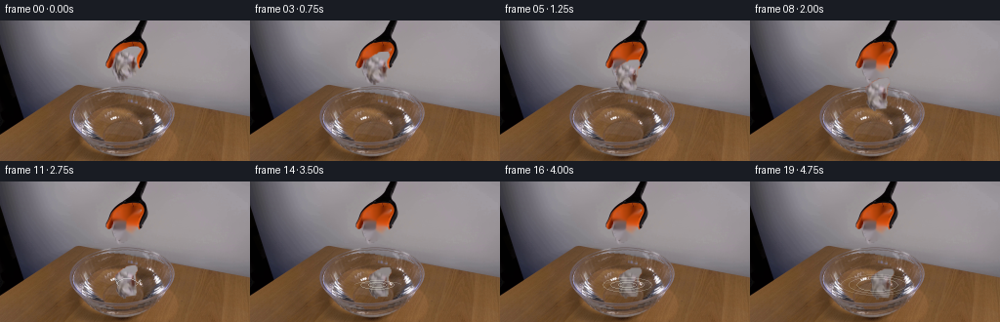
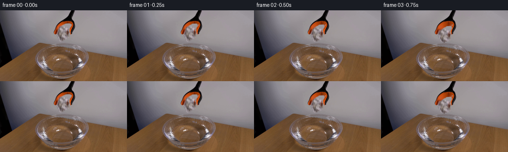
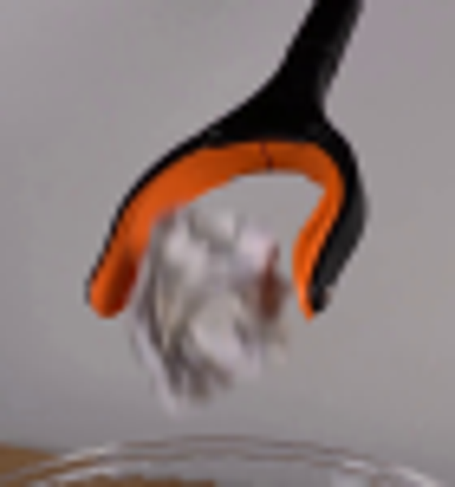
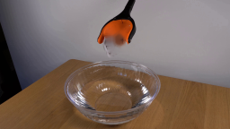
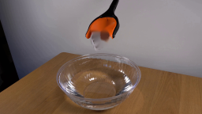

CODING AGENTS AS PIXEL WORLD MODELS
traex/GPT-5.6-Sol · 0135
点击播放 · 原生 RGB 像素
逐轮保存的候选
回放视频、检查图与代码变化。
每份候选均可单独播放。实际图片检查记录在下方工具轨迹中。
候选 01播放与检查图
点击播放 · 原生 RGB 像素

展开代码变化
--- 上一保存版本
+++ 本次保存版本
@@ -0,0 +1,186 @@
+"""Generate a locked-off scientific demonstration of a paper drop into water.
+
+Only first_frame.png is used as source imagery. Motion is made with local
+segmentation, image compositing and analytic ballistic/ripple dynamics.
+"""
+from pathlib import Path
+import cv2
+import numpy as np
+from PIL import Image, ImageDraw, ImageFilter
+import artifact_io
+
+ROOT = Path(__file__).resolve().parent
+N, H, W = 20, 144, 256
+
+
+def paper_mask(bgr):
+ """Conservative GrabCut extraction of the crumpled paper between jaws."""
+ hsv = cv2.cvtColor(bgr, cv2.COLOR_BGR2HSV)
+ yy, xx = np.mgrid[:H, :W]
+ gc = np.zeros((H, W), np.uint8)
+ polygon = np.array([[122,21],[134,21],[141,27],[144,36],[141,48],
+ [137,58],[132,64],[125,61],[120,56],[117,48],
+ [116,39],[118,29]], np.int32)
+ region = np.zeros((H, W), np.uint8)
+ cv2.fillPoly(region, [polygon], 1)
+ reg = region.astype(bool)
+ gc[reg] = cv2.GC_PR_FGD
+ # Exclude the strongly colored plastic and the deepest black tool pixels.
+ gc[reg & ((hsv[...,1] > 110) | (bgr.max(2) < 42))] = cv2.GC_BGD
+ # High-confidence paper fibers in the center.
+ sure = reg & (xx >= 121) & (xx <= 138) & (yy >= 27) & (yy <= 58)
+ sure &= (((hsv[...,1] < 75) & (bgr.max(2) > 145)) |
+ ((yy > 42) & (bgr.min(2) < 130)))
+ gc[sure] = cv2.GC_FGD
+ bgd = np.zeros((1,65), np.float64)
+ fgd = np.zeros((1,65), np.float64)
+ cv2.grabCut(bgr, gc, None, bgd, fgd, 8, cv2.GC_INIT_WITH_MASK)
+ m = np.where((gc == cv2.GC_FGD) | (gc == cv2.GC_PR_FGD), 255, 0).astype(np.uint8)
+ return m
+
+
+def alpha_paste(dst, patch, alpha, x, y):
+ """Paste RGBA-like arrays, safely clipped to frame."""
+ ph, pw = alpha.shape
+ x0, y0, x1, y1 = max(0,x), max(0,y), min(W,x+pw), min(H,y+ph)
+ if x0 >= x1 or y0 >= y1:
+ return
+ sx0, sy0 = x0-x, y0-y
+ a = alpha[sy0:sy0+y1-y0, sx0:sx0+x1-x0, None].astype(np.float32)/255.0
+ q = patch[sy0:sy0+y1-y0, sx0:sx0+x1-x0].astype(np.float32)
+ d = dst[y0:y1, x0:x1].astype(np.float32)
+ dst[y0:y1, x0:x1] = np.clip(q*a + d*(1-a),0,255).astype(np.uint8)
+
+
+def make_paper_sprite(rgb, mask):
+ ys, xs = np.where(mask > 0)
+ x0,x1,y0,y1 = xs.min(),xs.max()+1,ys.min(),ys.max()+1
+ # Include two pixels of antialiased edge context.
+ x0,y0=max(0,x0-2),max(0,y0-2); x1,y1=min(W,x1+2),min(H,y1+2)
+ p = rgb[y0:y1,x0:x1].copy()
+ a = mask[y0:y1,x0:x1]
+ # Subpixel-looking edge rather than a hard cutout.
+ a = cv2.GaussianBlur(a,(3,3),0.45)
+ return p,a,(x0,y0)
+
+
+def transformed(sprite, alpha, scale=1.0, angle=0.0, wet=0.0):
+ h,w = alpha.shape
+ side = int(np.ceil(np.hypot(h,w))) + 8
+ can = np.zeros((side,side,3),np.uint8)
+ ca = np.zeros((side,side),np.uint8)
+ ox=(side-w)//2; oy=(side-h)//2
+ can[oy:oy+h,ox:ox+w]=sprite; ca[oy:oy+h,ox:ox+w]=alpha
+ M=cv2.getRotationMatrix2D((side/2,side/2), angle, scale)
+ p=cv2.warpAffine(can,M,(side,side),flags=cv2.INTER_LINEAR,borderMode=cv2.BORDER_CONSTANT)
+ a=cv2.warpAffine(ca,M,(side,side),flags=cv2.INTER_LINEAR,borderMode=cv2.BORDER_CONSTANT)
+ if wet:
+ # Wet paper turns slightly darker and cooler, while keeping source texture.
+ tint=np.array([171,160,143],np.float32)
+ p=np.clip(p.astype(np.float32)*(1-.30*wet)+tint*(.17*wet),0,255).astype(np.uint8)
+ return p,a
+
+
+def ellipse_overlay(frame, box, color, width=1, blur=0.0, arc=None):
+ layer=Image.new('RGBA',(W,H),(0,0,0,0)); d=ImageDraw.Draw(layer)
+ if arc is None: d.ellipse(box,outline=color,width=width)
+ else: d.arc(box,arc[0],arc[1],fill=color,width=width)
+ if blur: layer=layer.filter(ImageFilter.GaussianBlur(blur))
+ base=Image.fromarray(frame).convert('RGBA'); base.alpha_composite(layer)
+ frame[:]=np.asarray(base.convert('RGB'))
+
+
+def draw_water_effects(frame, k, paper_center=None):
+ """Impact splash, concentric ripples and physically plausible reflections."""
+ # k is frames after first contact.
+ cx, cy = 130, 106
+ if k == 0:
+ # tiny crown/splash at contact, partly obscuring paper edge
+ layer=Image.new('RGBA',(W,H),(0,0,0,0)); d=ImageDraw.Draw(layer)
+ d.arc((119,99,141,112),190,350,fill=(226,229,225,150),width=1)
+ d.line([(121,106),(118,101),(120,104)],fill=(235,237,232,125),width=1)
+ d.line([(139,106),(142,102),(140,105)],fill=(235,237,232,125),width=1)
+ d.ellipse((117,99,119,101),fill=(225,231,231,130))
+ d.ellipse((142,100,144,102),fill=(225,231,231,115))
+ layer=layer.filter(ImageFilter.GaussianBlur(.25))
+ im=Image.fromarray(frame).convert('RGBA'); im.alpha_composite(layer); frame[:]=np.asarray(im.convert('RGB'))
+ return
+ # Expanding, fading perspective ellipses lie within the bowl's water surface.
+ radii=[]
+ for age in (k, k-2, k-4):
+ if age>0: radii.append((5.0+4.0*age, age))
+ for r,age in radii:
+ r=min(r,45)
+ opacity=max(15,int(118-10*age))
+ # bright leading edge and subtle dark trough offset by a pixel
+ ellipse_overlay(frame,(cx-r,cy-r*.29,cx+r,cy+r*.29),
+ (225,224,211,opacity),1,.18)
+ ellipse_overlay(frame,(cx-r+.7,cy-r*.29+1,cx+r-.7,cy+r*.29+1),
+ (75,66,52,max(10,opacity//3)),1,.35,arc=(8,172))
+ # Fine radial waves after the crown collapses.
+ if 1 <= k <= 5:
+ layer=Image.new('RGBA',(W,H),(0,0,0,0)); d=ImageDraw.Draw(layer)
+ fade=max(20,95-14*k)
+ for dx in (-16,-9,10,17):
+ d.arc((cx+dx-5-k,cy-3,cx+dx+5+k,cy+4),195,340,
+ fill=(235,235,224,fade),width=1)
+ layer=layer.filter(ImageFilter.GaussianBlur(.3))
+ im=Image.fromarray(frame).convert('RGBA'); im.alpha_composite(layer); frame[:]=np.asarray(im.convert('RGB'))
+
+
+def main():
+ src=np.asarray(Image.open(ROOT/'first_frame.png').convert('RGB'))
+ bgr=cv2.cvtColor(src,cv2.COLOR_RGB2BGR)
+ mask=paper_mask(bgr)
+ sprite,alpha,(sx,sy)=make_paper_sprite(src,mask)
+
+ # Remove the held paper to expose the fixed grabber/background. Since that
+ # area is uniform wall, a local Navier-Stokes inpaint is temporally stable.
+ hole=cv2.dilate(mask,np.ones((3,3),np.uint8),iterations=1)
+ clean_bgr=cv2.inpaint(bgr,hole,3,cv2.INPAINT_NS)
+ clean=cv2.cvtColor(clean_bgr,cv2.COLOR_BGR2RGB)
+
+ frames=[]
+ orig_center=(sx+sprite.shape[1]/2,sy+sprite.shape[0]/2)
+ impact_frame=11
+ for i in range(N):
+ if i==0:
+ frames.append(src.copy()); continue
+ fr=clean.copy()
+ # Fixed camera/tool; paper is released immediately after first frame.
+ if i <= impact_frame:
+ t=i/impact_frame
+ # Ballistic drop: slow at release, accelerating under gravity.
+ cx=orig_center[0] + 1.2*np.sin(np.pi*t) + .8*t
+ cy=orig_center[1] + 5.0*t + 54.5*t*t
+ angle=2.0*np.sin(i*.75) + 5.5*t
+ scale=1.0 - .035*t
+ p,a=transformed(sprite,alpha,scale,angle,wet=0)
+ alpha_paste(fr,p,a,int(round(cx-p.shape[1]/2)),int(round(cy-p.shape[0]/2)))
+ elif i <= 14:
+ # The low-density crumple bobs; lower portion is under water.
+ k=i-impact_frame
+ cx=orig_center[0]+.8+1.0*k
+ cy=orig_center[1]+59.5 + (2.2 if k==1 else .5*k)
+ p,a=transformed(sprite,alpha,0.965-.012*k,6.0-1.4*k,wet=.30+.18*k)
+ alpha_paste(fr,p,a,int(round(cx-p.shape[1]/2)),int(round(cy-p.shape[0]/2)))
+ else:
+ # Paper settles afloat, spreading and partially hidden by glare.
+ k=i-impact_frame
+ cx=orig_center[0]+3.0+0.45*(i-14)
+ cy=orig_center[1]+61.0+.22*np.sin(i)
+ p,a=transformed(sprite,alpha,0.93,1.5*np.sin(i*.6),wet=1.0)
+ # bottom is subdued by water transmission
+ yy=np.arange(a.shape[0])[:,None]
+ a=np.where(yy>a.shape[0]*.62,(a.astype(float)*.80),a).astype(np.uint8)
+ alpha_paste(fr,p,a,int(round(cx-p.shape[1]/2)),int(round(cy-p.shape[0]/2)))
+ if i>=impact_frame:
+ draw_water_effects(fr,i-impact_frame)
+ frames.append(fr)
+
+ arr=np.stack(frames).astype(np.uint8)
+ assert np.array_equal(arr[0],src)
+ artifact_io.save(arr,ROOT)
+
+if __name__=='__main__':
+ main()
候选 02播放与检查图
点击播放 · 原生 RGB 像素

展开代码变化
--- 上一保存版本
+++ 本次保存版本
@@ -136,7 +136,19 @@
# Remove the held paper to expose the fixed grabber/background. Since that
# area is uniform wall, a local Navier-Stokes inpaint is temporally stable.
- hole=cv2.dilate(mask,np.ones((3,3),np.uint8),iterations=1)
+ # A broader cleanup matte also catches reddish shadowed paper fibers which
+ # GrabCut conservatively omits; strongly orange and black jaw pixels are
+ # explicitly preserved.
+ cleanup=np.zeros((H,W),np.uint8)
+ cleanup_poly=np.array([[122,28],[137,28],[141,34],[141,44],[139,51],
+ [136,59],[131,63],[124,60],[119,55],[117,47],
+ [118,36]],np.int32)
+ cv2.fillPoly(cleanup,[cleanup_poly],255)
+ rr,gg,bb=src[...,0],src[...,1],src[...,2]
+ jaw_orange=(rr>115)&((rr.astype(int)-gg)>58)&((gg.astype(int)-bb)>15)
+ jaw_black=src.max(2)<70
+ cleanup[jaw_orange|jaw_black]=0
+ hole=cv2.dilate(cv2.max(mask,cleanup),np.ones((3,3),np.uint8),iterations=1)
clean_bgr=cv2.inpaint(bgr,hole,3,cv2.INPAINT_NS)
clean=cv2.cvtColor(clean_bgr,cv2.COLOR_BGR2RGB)
候选 03播放与检查图
可观测工具轨迹
实际执行的命令与返回图片。
命令 1exit 0
/bin/bash -lc "cat prompt.txt && printf '\\n---RULES---\\n' && cat GENERATION_RULES.md"
命令 2exit 0
/bin/bash -lc "find . -maxdepth 2 -type f -printf '%p %s bytes\\n' | sort"
命令 3exit 0
/bin/bash -lc "sed -n '1,240p' artifact_io.py"
命令 4exit 0
/bin/bash -lc "python - <<'PY'
from PIL import Image
im=Image.open('first_frame.png')
print(im.mode, im.size)
PY
which ffmpeg || true
python - <<'PY'
for m in ['cv2','numpy','PIL','scipy','skimage']:
try:
x=__import__(m); print(m, getattr(x,'__version__','ok'))
except Exception as e: print(m,e)
PY"命令 5exit 0
/bin/bash -lc "python - <<'PY'
from PIL import Image
im=Image.open('first_frame.png')
im.crop((95,0,165,75)).resize((560,600)).save('.tmp/crop.png')
PY"命令 6exit 0
/bin/bash -lc "cat > .tmp/testmask.py <<'PY'
import cv2, numpy as np
from PIL import Image
im=cv2.imread('first_frame.png')
h,w=im.shape[:2]
mask=np.zeros((h,w),np.uint8)
# probable foreground paper polygon
poly=np.array([[123,21],[134,21],[142,27],[144,36],[141,47],[138,57],[132,64],[125,60],[121,56],[118,48],[116,39],[118,29]],np.int32)
cv2.fillPoly(mask,[poly],cv2.GC_PR_FGD)
# definite foreground selective central irregular areas? set polygon core probable only, color seeds
hsv=cv2.cvtColor(im,cv2.COLOR_BGR2HSV)
y,x=np.mgrid[:h,:w]
region=cv2.fillPoly(np.zeros((h,w),np.uint8),[poly],1).astype(bool)
# sure fg bright or distinct neutral within paper center/lower
seed=region & (x>=121)&(x<=138)&(y>=27)&(y<=57) & (((hsv[:,:,1]<75)&(im.max(2)>150)) | ((y>42)&(im.min(2)<130)))
mask[seed]=cv2.GC_FGD
# sure background tool orange/black
mask[region & ((hsv[:,:,1]>110) | (im.max(2)<45))]=cv2.GC_BGD
bg=np.zeros((1,65),np.float64); fg=np.zeros((1,65),np.float64)
cv2.grabCut(im,mask,None,bg,fg,8,cv2.GC_INIT_WITH_MASK)
out=np.where(((mask==1)|(mask==3))[...,None],im,255).astype(np.uint8)
a=(((mask==1)|(mask==3))*255).astype(np.uint8)
# Morph maybe
cv2.imwrite('.tmp/mask.png',a)
cv2.imwrite('.tmp/cut.png',out)
# background inpaint
ain=cv2.dilate(a,np.ones((3,3),np.uint8),iterations=1)
rest=cv2.inpaint(im,ain,5,cv2.INPAINT_TELEA)
cv2.imwrite('.tmp/rest.png',rest)
print('area',np.sum(a>0), 'bbox', cv2.boundingRect((a>0).astype(np.uint8)))
PY
python .tmp/testmask.py"命令 7exit 0
/bin/bash -lc "python - <<'PY'
import cv2, numpy as np
im=cv2.imread('first_frame.png'); a=cv2.imread('.tmp/mask.png',0)
for typ,name in [(cv2.INPAINT_NS,'ns'),(cv2.INPAINT_TELEA,'telea')]:
for r in [2,3,5,8]:
out=cv2.inpaint(im,cv2.dilate(a,np.ones((3,3),np.uint8),iterations=1),r,typ)
cv2.imwrite(f'.tmp/{name}{r}.png',out)
PY"命令 8exit 0
/bin/bash -lc "cat > generate.py <<'PY'
\"\"\"Generate a locked-off scientific demonstration of a paper drop into water.
Only first_frame.png is used as source imagery. Motion is made with local
segmentation, image compositing and analytic ballistic/ripple dynamics.
\"\"\"
from pathlib import Path
import cv2
import numpy as np
from PIL import Image, ImageDraw, ImageFilter
import artifact_io
ROOT = Path(__file__).resolve().parent
N, H, W = 20, 144, 256
def paper_mask(bgr):
\"\"\"Conservative GrabCut extraction of the crumpled paper between jaws.\"\"\"
hsv = cv2.cvtColor(bgr, cv2.COLOR_BGR2HSV)
yy, xx = np.mgrid[:H, :W]
gc = np.zeros((H, W), np.uint8)
polygon = np.array([[122,21],[134,21],[141,27],[144,36],[141,48],
[137,58],[132,64],[125,61],[120,56],[117,48],
[116,39],[118,29]], np.int32)
region = np.zeros((H, W), np.uint8)
cv2.fillPoly(region, [polygon], 1)
reg = region.astype(bool)
gc[reg] = cv2.GC_PR_FGD
# Exclude the strongly colored plastic and the deepest black tool pixels.
gc[reg & ((hsv[...,1] > 110) | (bgr.max(2) < 42))] = cv2.GC_BGD
# High-confidence paper fibers in the center.
sure = reg & (xx >= 121) & (xx <= 138) & (yy >= 27) & (yy <= 58)
sure &= (((hsv[...,1] < 75) & (bgr.max(2) > 145)) |
((yy > 42) & (bgr.min(2) < 130)))
gc[sure] = cv2.GC_FGD
bgd = np.zeros((1,65), np.float64)
fgd = np.zeros((1,65), np.float64)
cv2.grabCut(bgr, gc, None, bgd, fgd, 8, cv2.GC_INIT_WITH_MASK)
m = np.where((gc == cv2.GC_FGD) | (gc == cv2.GC_PR_FGD), 255, 0).astype(np.uint8)
return m
def alpha_paste(dst, patch, alpha, x, y):
\"\"\"Paste RGBA-like arrays, safely clipped to frame.\"\"\"
ph, pw = alpha.shape
x0, y0, x1, y1 = max(0,x), max(0,y), min(W,x+pw), min(H,y+ph)
if x0 >= x1 or y0 >= y1:
return
sx0, sy0 = x0-x, y0-y
a = alpha[sy0:sy0+y1-y0, sx0:sx0+x1-x0, None].astype(np.float32)/255.0
q = patch[sy0:sy0+y1-y0, sx0:sx0+x1-x0].astype(np.float32)
d = dst[y0:y1, x0:x1].astype(np.float32)
dst[y0:y1, x0:x1] = np.clip(q*a + d*(1-a),0,255).astype(np.uint8)
def make_paper_sprite(rgb, mask):
ys, xs = np.where(mask > 0)
x0,x1,y0,y1 = xs.min(),xs.max()+1,ys.min(),ys.max()+1
# Include two pixels of antialiased edge context.
x0,y0=max(0,x0-2),max(0,y0-2); x1,y1=min(W,x1+2),min(H,y1+2)
p = rgb[y0:y1,x0:x1].copy()
a = mask[y0:y1,x0:x1]
# Subpixel-looking edge rather than a hard cutout.
a = cv2.GaussianBlur(a,(3,3),0.45)
return p,a,(x0,y0)
def transformed(sprite, alpha, scale=1.0, angle=0.0, wet=0.0):
h,w = alpha.shape
side = int(np.ceil(np.hypot(h,w))) + 8
can = np.zeros((side,side,3),np.uint8)
ca = np.zeros((side,side),np.uint8)
ox=(side-w)//2; oy=(side-h)//2
can[oy:oy+h,ox:ox+w]=sprite; ca[oy:oy+h,ox:ox+w]=alpha
M=cv2.getRotationMatrix2D((side/2,side/2), angle, scale)
p=cv2.warpAffine(can,M,(side,side),flags=cv2.INTER_LINEAR,borderMode=cv2.BORDER_CONSTANT)
a=cv2.warpAffine(ca,M,(side,side),flags=cv2.INTER_LINEAR,borderMode=cv2.BORDER_CONSTANT)
if wet:
# Wet paper turns slightly darker and cooler, while keeping source texture.
tint=np.array([171,160,143],np.float32)
p=np.clip(p.astype(np.float32)*(1-.30*wet)+tint*(.17*wet),0,255).astype(np.uint8)
return p,a
def ellipse_overlay(frame, box, color, width=1, blur=0.0, arc=None):
layer=Image.new('RGBA',(W,H),(0,0,0,0)); d=ImageDraw.Draw(layer)
if arc is None: d.ellipse(box,outline=color,width=width)
else: d.arc(box,arc[0],arc[1],fill=color,width=width)
if blur: layer=layer.filter(ImageFilter.GaussianBlur(blur))
base=Image.fromarray(frame).convert('RGBA'); base.alpha_composite(layer)
frame[:]=np.asarray(base.convert('RGB'))
def draw_water_effects(frame, k, paper_center=None):
\"\"\"Impact splash, concentric ripples and physically plausible reflections.\"\"\"
# k is frames after first contact.
cx, cy = 130, 106
if k == 0:
# tiny crown/splash at contact, partly obscuring paper edge
layer=Image.new('RGBA',(W,H),(0,0,0,0)); d=ImageDraw.Draw(layer)
d.arc((119,99,141,112),190,350,fill=(226,229,225,150),width=1)
d.line([(121,106),(118,101),(120,104)],fill=(235,237,232,125),width=1)
d.line([(139,106),(142,102),(140,105)],fill=(235,237,232,125),width=1)
d.ellipse((117,99,119,101),fill=(225,231,231,130))
d.ellipse((142,100,144,102),fill=(225,231,231,115))
layer=layer.filter(ImageFilter.GaussianBlur(.25))
im=Image.fromarray(frame).convert('RGBA'); im.alpha_composite(layer); frame[:]=np.asarray(im.convert('RGB'))
return
# Expanding, fading perspective ellipses lie within the bowl's water surface.
radii=[]
for age in (k, k-2, k-4):
if age>0: radii.append((5.0+4.0*age, age))
for r,age in radii:
r=min(r,45)
opacity=max(15,int(118-10*age))
# bright leading edge and subtle dark trough offset by a pixel
ellipse_overlay(frame,(cx-r,cy-r*.29,cx+r,cy+r*.29),
(225,224,211,opacity),1,.18)
ellipse_overlay(frame,(cx-r+.7,cy-r*.29+1,cx+r-.7,cy+r*.29+1),
(75,66,52,max(10,opacity//3)),1,.35,arc=(8,172))
# Fine radial waves after the crown collapses.
if 1 <= k <= 5:
layer=Image.new('RGBA',(W,H),(0,0,0,0)); d=ImageDraw.Draw(layer)
fade=max(20,95-14*k)
for dx in (-16,-9,10,17):
d.arc((cx+dx-5-k,cy-3,cx+dx+5+k,cy+4),195,340,
fill=(235,235,224,fade),width=1)
layer=layer.filter(ImageFilter.GaussianBlur(.3))
im=Image.fromarray(frame).convert('RGBA'); im.alpha_composite(layer); frame[:]=np.asarray(im.convert('RGB'))
def main():
src=np.asarray(Image.open(ROOT/'first_frame.png').convert('RGB'))
bgr=cv2.cvtColor(src,cv2.COLOR_RGB2BGR)
mask=paper_mask(bgr)
sprite,alpha,(sx,sy)=make_paper_sprite(src,mask)
# Remove the held paper to expose the fixed grabber/background. Since that
# area is uniform wall, a local Navier-Stokes inpaint is temporally stable.
hole=cv2.dilate(mask,np.ones((3,3),np.uint8),iterations=1)
clean_bgr=cv2.inpaint(bgr,hole,3,cv2.INPAINT_NS)
clean=cv2.cvtColor(clean_bgr,cv2.COLOR_BGR2RGB)
frames=[]
orig_center=(sx+sprite.shape[1]/2,sy+sprite.shape[0]/2)
impact_frame=11
for i in range(N):
if i==0:
frames.append(src.copy()); continue
fr=clean.copy()
# Fixed camera/tool; paper is released immediately after first frame.
if i <= impact_frame:
t=i/impact_frame
# Ballistic drop: slow at release, accelerating under gravity.
cx=orig_center[0] + 1.2*np.sin(np.pi*t) + .8*t
cy=orig_center[1] + 5.0*t + 54.5*t*t
angle=2.0*np.sin(i*.75) + 5.5*t
scale=1.0 - .035*t
p,a=transformed(sprite,alpha,scale,angle,wet=0)
alpha_paste(fr,p,a,int(round(cx-p.shape[1]/2)),int(round(cy-p.shape[0]/2)))
elif i <= 14:
# The low-density crumple bobs; lower portion is under water.
k=i-impact_frame
cx=orig_center[0]+.8+1.0*k
cy=orig_center[1]+59.5 + (2.2 if k==1 else .5*k)
p,a=transformed(sprite,alpha,0.965-.012*k,6.0-1.4*k,wet=.30+.18*k)
alpha_paste(fr,p,a,int(round(cx-p.shape[1]/2)),int(round(cy-p.shape[0]/2)))
else:
# Paper settles afloat, spreading and partially hidden by glare.
k=i-impact_frame
cx=orig_center[0]+3.0+0.45*(i-14)
cy=orig_center[1]+61.0+.22*np.sin(i)
p,a=transformed(sprite,alpha,0.93,1.5*np.sin(i*.6),wet=1.0)
# bottom is subdued by water transmission
yy=np.arange(a.shape[0])[:,None]
a=np.where(yy>a.shape[0]*.62,(a.astype(float)*.80),a).astype(np.uint8)
alpha_paste(fr,p,a,int(round(cx-p.shape[1]/2)),int(round(cy-p.shape[0]/2)))
if i>=impact_frame:
draw_water_effects(fr,i-impact_frame)
frames.append(fr)
arr=np.stack(frames).astype(np.uint8)
assert np.array_equal(arr[0],src)
artifact_io.save(arr,ROOT)
if __name__=='__main__':
main()
PY
python generate.py"命令 9exit 0
/bin/bash -lc "python - <<'PY'
from PIL import Image
import numpy as np
x=np.array(Image.open('first_frame.png'))
for y in [20,25,30,35,40,45,50,55,60,65]:
print(y,[tuple(x[y,z]) for z in [110,115,120,125,130,135,140,145,150]])
PY"命令 10exit 0
/bin/bash -lc "python generate.py && python - <<'PY'
import numpy as np
from PIL import Image
x=np.array(Image.open('first_frame.png')); y=np.array(Image.open('frames/00.png'))
print('frame0 identical',np.array_equal(x,y), 'shape',x.shape)
z=np.load('pixels.npz')['pixels']; print('pixels tensor',z.shape,z.dtype)
PY"视觉工具实际返回图片 1

视觉工具实际返回图片 2

视觉工具实际返回图片 3
视觉工具实际返回图片 4

视觉工具实际返回图片 5

视觉工具实际返回图片 6

视觉工具实际返回图片 7

视觉工具实际返回图片 8

保存候选 3 份；完成命令 10 次；可验证图片返回 8 张。原始 API 响应与完整日志保留在本地。